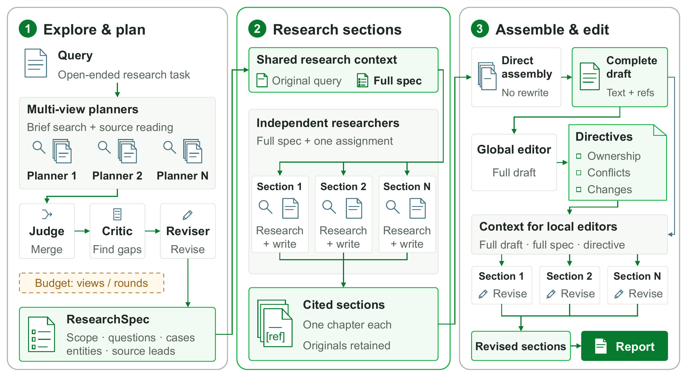

技术报告 · 多智能体研究框架
LongCat-DeepResearch
共享研究规划，独立开展章节研究，以定向修订完成长篇报告。
让开放式研究保持一致与深入

从问题到带引用的研究报告
原生深度研究基准上的表现
| 系统 | DRB-I | DRB-II | ResearchRubrics |
|---|---|---|---|
| LongCat-DeepResearch | 55.25 | 51.35 | 79.83 |
| ChatGPT-DeepResearch | 54.95 | 47.16 | 74.21 |
| Claude-DeepResearch | 53.43 | 48.18 | 72.91 |
| Gemini-DeepResearch | 50.21 | 46.72 | 64.92 |